Generates documentation based upon a yaml- or JSON-file.
Describe how your database looks, in a single file (or files) and then generate the corresponding documentation.
The basic idea of the Documentation Generator is one place to have a single model and then generate
and distribute documentation into different places.

For usage and more information, go to:
GitHub Documentation Generator